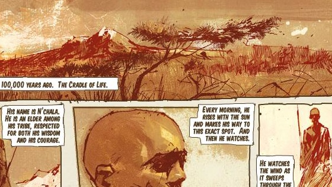

00:00:00:00
Campaign
- Noble Actual
- Winter Contingency
- ONI: Sword Base
- Nightfall
- Tip of the Spear
- Long Night of Solace
- Exodus
- New Alexandria
- The Package
- The Pillar of Autumn
- The Piller of Autumn
- Halo
- Truth and Reconciliation
- The Silent Cartographer
- Assault on the Control Room
- 343 Guilty Spark
- The Library
- Two Betrayals
- Keyes
- The Maw
- Cairo Station
- Outskirts
- Metropolis
- The Arbiter
- The Oracle
- Delta Halo
- Regret
- Sacred Icon
- Quarantine Zone
- Gravemind
- Uprising
- High Charity
- The Great Journey
- Mombasa Streets
- Tayari Plaza
- Mombasa Streets
- Uplift Reserve
- Mombasa Streets
- Kizingo Boulevard
- Mombasa Streets
- ONI Alpha Site
- Mombasa Streets
- NMPD HQ
- Mombasa Streets
- Kikowani Station
- Data Hive
- Coastal Highway
The Cradle of Life

- Arrival
- Sierra 117
- Crow’s Nest
- Tsavo Highway
- The Storm
- Floodgate
- The Ark
- The Covenant
- Cortana
- Halo